Fundamentals of Linear Control:
A
Concise Approach
Maurício C. de Oliveira
Chapter 4: Feedback Analysis
linearcontrol.info/fundamentals
Recall from Chapter 3
Time-invariant linear system in the time-domain
Impulse response
\[\begin{align*} g(t), \quad t \geq 0 \end{align*}\]
Convolution
\[\begin{align*} y(t) &= \int_{0^-}^{\infty} g(t - \tau) \, u(\tau) \,d\tau \end{align*}\]
Time-invariant linear system in the frequency-domain
Transfer-function
\[\begin{align*} G(s) = \mathcal{L} \{ g(t) \} \end{align*}\]
Product
\[\begin{align*} Y(s) &= G(s) \, U(s), & Y(s) &= \mathcal{L} \{ y(t) \}, & U(s) &= \mathcal{L} \{ u(t) \} \end{align*}\]
4.1 Tracking, Sensitivity, and Integral Control

Loop relations
\[\begin{align*} Y(s) &= G(s) \, U(s), & U(s) &= K(s) \, E(s), & E(s) &= \bar{Y}(s) - Y(s) \end{align*}\]
Closed-loop sensitivity transfer-function
\[\begin{align*} E(s) &= S(s) \, \bar{Y}(s), & S(s) &= \frac{1}{1 + G(s) \, K(s)} \end{align*}\]
Short-hand notation
\[\begin{align*} e &= S \, \bar{y}, & S &= \frac{1}{1 + G \, K}, & \text{etc} \end{align*}\]
Example: car model with proportional feedback
Open-loop transfer-function
\[\begin{align*} G(s) = \frac{\frac{p}{m}}{s + \frac{b}{m}} \end{align*}\]
Closed-loop sensitivity transfer-functions
\[\begin{align*} S(s) = \frac{1}{1 + K \frac{\frac{p}{m}}{s + \frac{b}{m}}} = \frac{s + \frac{b}{m}}{s + \frac{b}{m} + K \frac{p}{m}} \end{align*}\]
Closed-loop stability
\[\begin{align*} - \left ( \frac{b}{m} + \frac{p}{m} K \right ) &< 0 & &\implies & K > - \frac{b}{p} \end{align*}\]
Tracking error
Reference input
\[\begin{align*} \bar{y}(t) &= \bar{y} \cos( \omega t + \phi), \quad t \geq 0 \end{align*}\]
Steady-state from frequency response
\[\begin{align*} e_{\mathrm{ss}}(t) &= \bar{y} \, |S(j \omega)| \cos( \omega t + \phi + \angle S(j \omega)) & & \implies & | e_{\mathrm{ss}}(t) | &\leq | S(j \omega) | \, |\bar{y}| \end{align*}\]
e.g. car model with a step reference
\[\begin{align*} | e_{\mathrm{ss}}(t) | &\leq | S(0) | \, |\bar{y}| = \frac{ \frac{b}{m}}{\frac{b}{m} + \frac{p}{m} K} |\bar{y}| = \frac{1}{1 + \frac{p}{b} K} |\bar{y}| \end{align*}\]
Asymptotic tracking
Definition
Error converges to zero for large time \[\begin{align*} \lim_{t \rightarrow \infty} e(t) &= 0 \end{align*}\]
Stability of \(S\) is not enough. It is necessary that \[\begin{align*} E = S \, \bar{Y} \end{align*}\] Poles of \(\bar{Y}\) must be cancelled by zeros of \(S\)!
Lemma 4.1
Let \(S = (1 + G \, K)^{-1}\) be asymptotically stable and \[\begin{align*} \bar{y}(t) = \bar{y} \cos(\omega t + \phi) \end{align*}\] If \(G \, K\) has a pole at \(s = j \omega\) then \(\lim_{t \rightarrow \infty} e(t) = 0\)
Proof: \(S\) has a zero at \(s = j \omega\)
Example: toilet bowl model
Open-loop transfer-function
\[\begin{align} G(s) &= \frac{1}{s A} \end{align}\]
Closed-loop sensitivity transfer-function
\[\begin{align} S(s) &= \frac{1}{1 + G(s) \, K} = \frac{1}{1 + \frac{K}{s A}} = \frac{s}{s + \frac{K}{A}} \end{align}\]
Asymptotically stable for \(K > 0\)
\(S\) has a zero at zero: asymptotic tracking of step (constant) reference inputs
Example: car model with integral feedback
Open-loop transfer-function
\[\begin{align*} G(s) = \frac{\frac{p}{m}}{s + \frac{b}{m}} \end{align*}\]
Integral control
\[\begin{align*} K(s) = \frac{K}{s} \end{align*}\]
Closed-loop sensitivity transfer-functions
\[\begin{align*} S(s) = \frac{1}{1 + \frac{K}{s} \frac{\frac{p}{m}}{s + \frac{b}{m}}} = \frac{s\left (s + \frac{b}{m}\right )}{s^2 + \frac{b}{m} s + K \frac{p}{m}} \end{align*}\]
Asymptotically stable for \(K > 0\)
\(S\) has a zero at zero: asymptotic tracking of step (constant) reference inputs
Example: car model with integral feedback
Controller
\[\begin{align*} U(s) &= \frac{K}{s} E(s) & & \implies & u(t) &= u(0) + K \int_0^t e(\tau) \, d\tau \end{align*}\]
System + Controller block-diagram
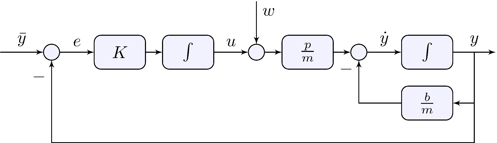
Example: car model with integral feedback
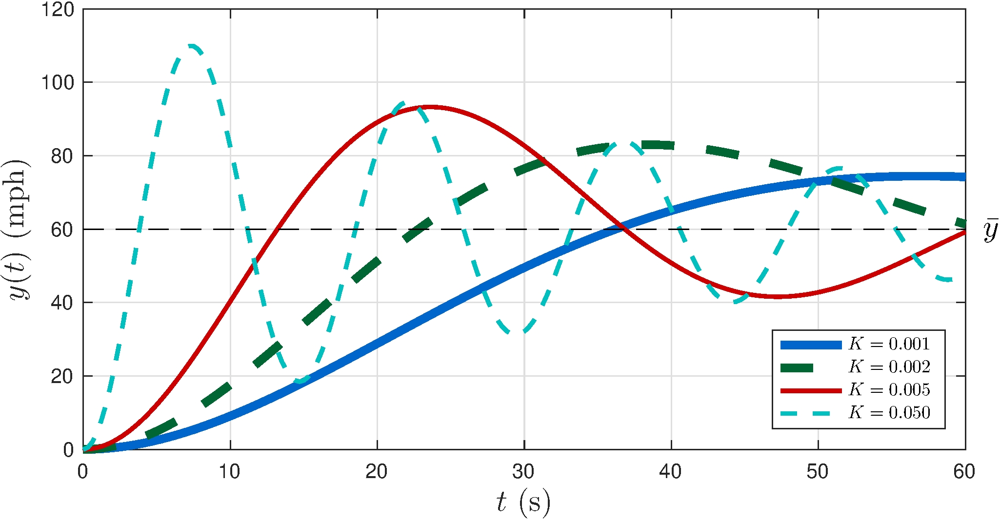
Transient response has oscilations!
4.2 Stability and Transient Response
Some facts
- The zeros of \(1 + G K\) are the poles of \(S\)
- The poles of the product \(G \, K\) are the zeros of \(S\)
- When \(G\) and \(K\) are rational the order of \(S\) is the order of the product \(G \, K\)
Example: rational transfer-function with no pole-zero cancellations
\[\begin{align*} G &= \frac{N_G}{D_G}, & K &= \frac{N_K}{D_K}, & S &= \frac{1}{1 + \frac{N_G}{D_G} \frac{N_K}{D_K}} = \frac{D_G D_K}{D_G D_K + N_G N_K} \end{align*}\]
For tracking
- Add poles to \(K\) so they become zeros of \(S\)
- More complex \(K\) leads to more complex \(S\)
- Watch out for stability and oscillations, e.g. car model with integral feedback
Example: car model with proportional plus integral feedback
Proportional plus integral control
\[\begin{align} G(s) &= \frac{\left . {p} \middle / {m} \right .}{s + \left . {b} \middle / {m} \right .}, & K(s) &= K_p + s^{-1} K_i \end{align}\]
Closed-loop sensitivity transfer-functions
\[\begin{align*} S(s) &= \frac{1}{1 + G(s) \, K(s)} %% = \frac{1}{1 + \displaystyle\frac{\frac{p}{m} (K_p %% s + K_i)}{s \left (s + \frac{b}{m} \right )}} = \frac{s \left (s + \frac{b}{m} \right )}{s^2 + \left ( \frac{b}{m} + \frac{p}{m} K_p \right ) s + \frac{p}{m} K_i} \end{align*}\]
No complex-poles (oscillations) if \[\begin{align*} 0 < 4 \frac{p}{m} K_i &\leq \left ( \frac{b}{m} + \frac{p}{m} K_p \right )^2 \end{align*}\]
Example: car model with proportional plus integral feedback
Controller
\[\begin{align*} U(s) &= \left ( K_p + \frac{K_i}{s} \right ) E(s) & & \implies & u(t) &= u(0) + K_p e(t) + K_i \int_0^t e(\tau) \, d\tau \end{align*}\]
System + Controller block-diagram
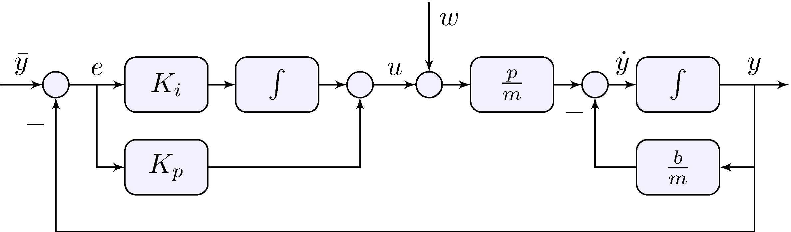
Example: car model with proportional plus integral feedback
Special choice
\[\begin{align*} K_i &= \frac{b}{m} K_p, & K(s) &= K_p + \frac{K_i}{s} = K_p \frac{s + \frac{b}{m}}{s} \end{align*}\] leads to a pole-zero cancellation \[\begin{align*} G(s) \, K(s) &= \frac{\frac{p}{m}}{s +\frac{b}{m}} \times K_p \frac{s + \frac{b}{m}}{s} = \frac{\frac{p}{m} K_p}{s}, \end{align*}\]
Closed-loop sensitivity transfer-functions
\[\begin{align*} \label{eq:scarpipzc} S(s) &= \frac{1}{1 + G(s) K(s)} = \frac{s}{s + \frac{p}{m} K_p} \end{align*}\]
Zero at the origin: asymptotic tracking
No complex poles: no oscillations
Example: car model with proportional plus integral feedback
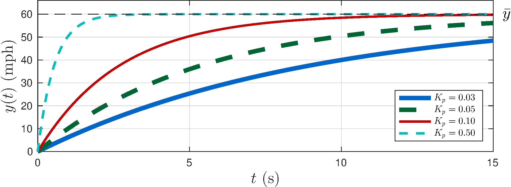
Asymptotic tracking, gone are the oscillations!
Beware of control effort: saturation occurs if \[\begin{align*} K_p > \frac{\overline{u}}{\bar{y}} = \frac{3}{60} = 0.05 \end{align*}\]
4.3 Integrator Wind-up
Example: car model with proportional plus integral feedback
Nonlinear input saturation
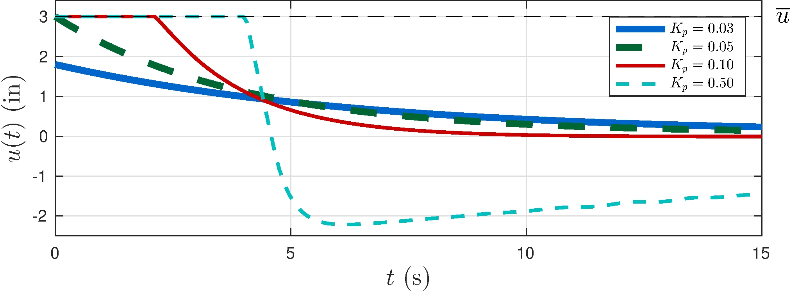
Output overshoots
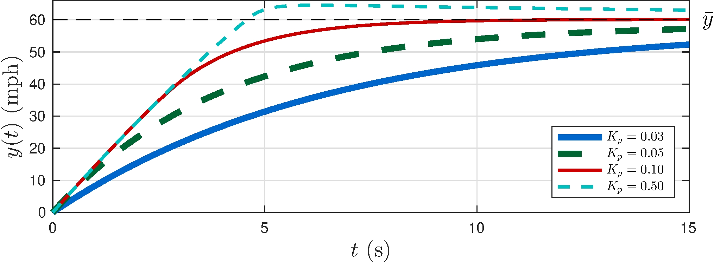
Example: car model with proportional plus integral feedback
Output converges slowly
Integrator wind-up
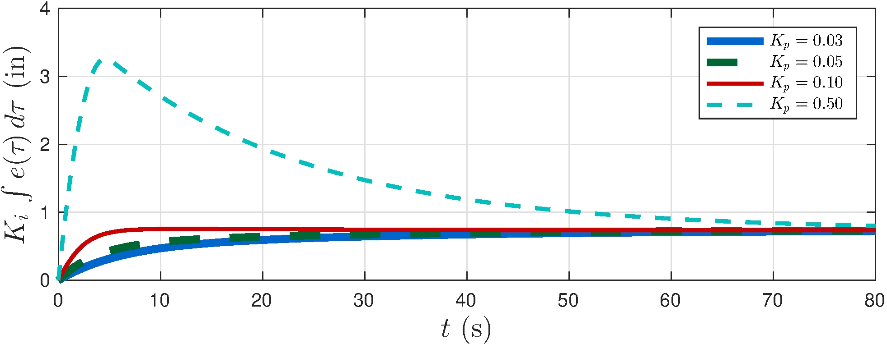
4.4 Feedback with Disturbances
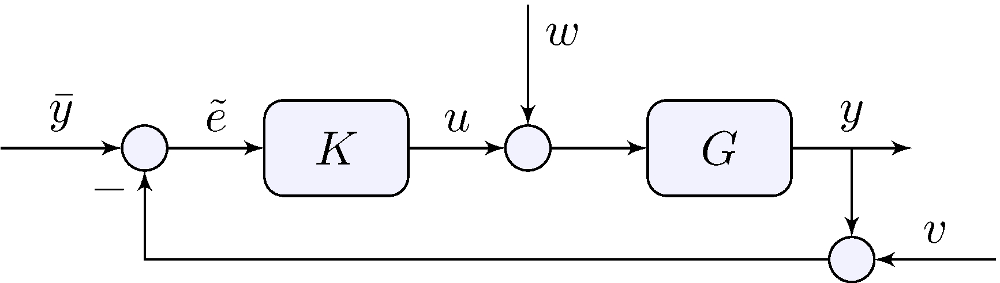
Loop relations
\[\begin{align*} y &= G \, (u + w), & u &= K \, \tilde{e}, & \tilde{e} &= \bar{y} - (y + v) \end{align*}\]
Closed-loop transfer-functions
\[\begin{align*} y &= H \, \bar{y} - H \, v + D \, w, & u &= Q \, \bar{y} - Q \, v - H \, w \end{align*}\]
Tracking error
\[\begin{align*} e &= \bar{y} - y = S \, \bar{y} + H \, v - D \, w \end{align*}\]
Beware \(\tilde{e} \neq e\)!
4.4 Feedback with Disturbances
Closed-loop transfer-functions
\[\begin{align*} y &= H \, \bar{y} - H \, v + D \, w \\ u &= Q \, \bar{y} - Q \, v - H \, w \\ e &= S \, \bar{y} + H \, v - D \, w \end{align*}\]
Gang of four
\[\begin{align*} S &= \frac{1}{1 + G K}, & D &= \frac{G}{1 + G K} & H &= \frac{G K}{1 + G K}, & Q &= \frac{K}{1 + G K} \end{align*}\]
4.4 Feedback with Disturbances
Gang of four
\[\begin{align*} S &= \frac{1}{1 + G K}, & D &= G S, & H &= G K S, & Q &= K S \end{align*}\]
- \(S\) has as zeros the poles of \(G K\)
- No pole-zero cancellations in \(G K \, \implies \, S\), \(D\), \(H\), \(Q\) have the same poles!
- Stabilizing \(S\) stabilizes all other transfer-functions
- If there are pole-zero cancellations in \(G K\) be careful and see Section 4.7
4.5 Input-Disturbance Rejection

Closed-loop transfer-functions
\[\begin{align*} e &= S \, \bar{y} - D \, w, & D &= G S = \frac{G}{1 + G K} \end{align*}\]
Lemma 4.2
Let \(S = (1 + G \, K)^{-1}\) and \(D = G S\) be asymptotically stable and \[\begin{align*} \bar{y}(t) &= \bar{y} \cos(\omega t + \phi), & w(t) &= \bar{w} \cos(\omega t + \psi) \end{align*}\] If \(K\) has a pole at \(s = j \omega\) then \(\lim_{t \rightarrow \infty} e(t) = 0\)
Proof: \(S\) and \(D\) have zeros at \(s = j \omega\)
Example: car model with proportional feedback
Closed-loop transfer-functions
\[\begin{align*} S(s) &= \frac{s + \frac{b}{m}}{s + \frac{b}{m} + \frac{p}{m} K}, & D(s) &= S(s) \, G(s) = \frac{\frac{p}{m}}{s + \frac{b}{m} + \frac{p}{m} K} \end{align*}\]
No asymptotic tracking, no asymptotic disturbance rejection
Example: car model with integral feedback
Closed-loop transfer-functions
\[\begin{align} S(s) &= \frac{s \left ( s + \frac{b}{m} \right )}{s^2 + \frac{b}{m} s + \frac{p}{m} K}, & D(s) &= S(s) \, G(s) = \frac{\frac{p}{m} s}{s^2 + \frac{b}{m} s + \frac{p}{m} K} \end{align}\]
Asymptotic tracking and asymptotic disturbance rejection, oscillations
Example: car model with integral feedback
Closed-loop transfer-functions
\[\begin{align} S(s) &= \frac{s \left ( s + \frac{b}{m} \right )}{s^2 + \frac{b}{m} s + \frac{p}{m} K}, & D(s) &= S(s) \, G(s) = \frac{\frac{p}{m} s}{s^2 + \frac{b}{m} s + \frac{p}{m} K} \end{align}\]
Asymptotic tracking and asymptotic disturbance rejection, oscillations
Example: car model with proportional plus integral feedback
Closed-loop transfer-functions
\[\begin{align} S(s) &= \frac{s}{s + \frac{p}{m} K_p}, & D(s) &= S(s) \, G(s) = \frac{\frac{p}{m} s}{\left ( s + \frac{b}{m} \right ) \left ( s + \frac{p}{m} K_p \right ) } \end{align}\]
Asymptotic tracking and asymptotic disturbance rejection, no oscillations
4.5 Input-Disturbance Rejection
Example: car model with various feedback controllers
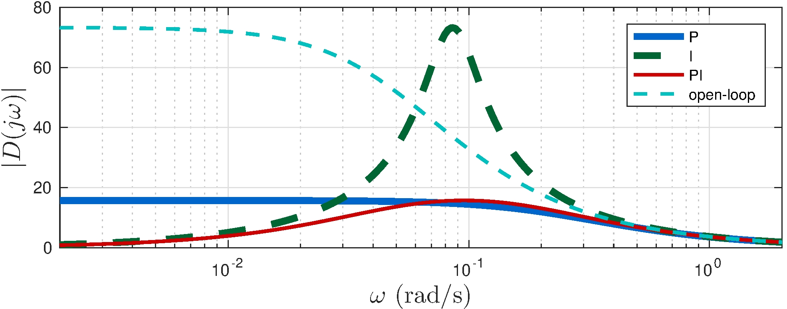
Integral controller is sensitive to disturbances at \(0.1\) rad/s
Watch out for rolling hills!
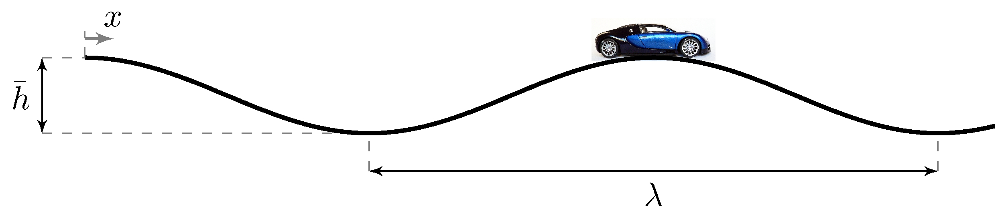
Example: toilet bowl model
Loop relations
\[\begin{align*} G(s) &= \frac{1}{s A}, & K(s) &= K \end{align*}\]
Closed-loop transfer-functions
\[\begin{align*} S(s) &= \frac{s}{s + \frac{K}{A}}, & D(s) &= \frac{\frac{1}{A}}{s + \frac{K}{A}} \end{align*}\]
Asymptotic tracking but no asymptotic disturbance rejection!
Pole must be at the controller for asymptotic disturbance rejection
\(D\) does not have a zero at the origin
4.6 Measurement noise
Closed-loop transfer-functions
\[\begin{align*} e &= S \, \bar{y} + H \, v, & S &= \frac{1}{1 + G K}, & H &= G K S \end{align*}\]
Fundamental limitation
\[\begin{align*} S + H = 1 \end{align*}\]
At every frequency
\[\begin{align*} S(j \omega) + H(j \omega) = 1 \end{align*}\]
Good tracking (\(S(j\omega) \approx 0\)) means bad measurement noise rejection (\(H(j\omega) \approx 1\))
Good measurement noise rejection (\(H(j\omega) \approx 0\)) means bad tracking (\(S(j\omega) \approx 1\))
Tracking requires good sensors!
\(|S(j \omega)| + |H(j \omega)| \neq 1\): both \(S\) and \(H\) can be large at the same time!
4.7 Pole-zero Cancellations and Stability

Open-loop
\[\begin{align*} G &= \frac{N_G}{D_G}, & K &= G^{-1} = \frac{D_G}{N_G}, \end{align*}\]
- \(G\) cannot be strictly proper or \(K\) will not be proper
- Even if \(G\) is proper but not strictly proper and \(K = G^{-1}\) \[\begin{align*} y &= G \, K \, \bar{y} + G w = \bar{y} + G w, & u &= K \bar{y} \end{align*}\]
- Both \(G\) and \(K\) must be stable or \(y\) or \(u\) will be unbounded
- Stabilization of unstable systems cannot be done in open-loop
4.7 Pole-zero Cancellations and Stability
Closed-loop
Internal stability if
\[\begin{align*} S, \qquad S \, G, \qquad S \, K, \qquad S \, G \, K \end{align*}\] are all asymptotically stable
Lemma 4.3:
Internal stability if and only if \(S\) is asymptotically stable and any pole-zero cancellation in \(G K\) is of stable poles or zeros
Proof (sketch): If \[\begin{align*} G &= \frac{(s - z)}{(s - p)} \tilde{G}, & K &= \frac{(s - p)}{(s - z)} \tilde{K}, & G K &= \tilde{G} \tilde{K}, & S &= \tilde{S} = \frac{1}{1 + \tilde{G} \tilde{K}} \end{align*}\] However \[\begin{align*} S G &= \frac{(s - z)}{(s - p)} \tilde{S} \tilde{G}, & S K &= \frac{(s - p)}{(s - z)} \tilde{K} \tilde{G} \end{align*}\] so that \(z\) and \(p\) must both have negative real part
Example: car model with proportional plus integral feedback
Model and controller
\[\begin{align*} G(s) &= \frac{\left . {p} \middle / {m} \right .}{s + \left . {b} \middle / {m} \right. }, & K(s) &= K_p \frac{s + z}{s}, & z = \frac{K_i}{K_p} = \frac{b}{m} \end{align*}\]
Closed-loop transfer-functions
\[\begin{align*} S(s) &= \frac{s}{s + \frac{p}{m} K_p}, & H(s) &= \frac{\frac{p}{m} K_p}{s + \frac{p}{m} K_p}, & Q(s) &= \frac{K_p \left ( s + \frac{b}{m} \right )}{s + \frac{p}{m} K_p}, & D(s) &= \frac{\frac{p}{m} s}{\left ( s + \frac{b}{m} \right ) \left ( s + \frac{p}{m} K_p \right ) } \end{align*}\]
Canceled pole is a zero of \(Q\) and a pole of \(D\)
Example: car model with proportional plus integral feedback
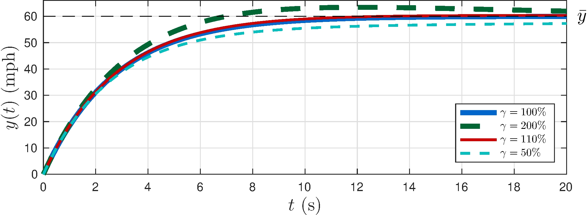
Imperfect cancellation
\[\begin{align*} K_i &= \gamma \frac{b}{m} K_p \end{align*}\]
More to come in Chapter 6